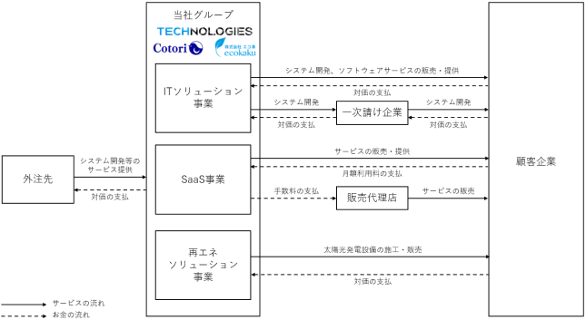

(注) １．当社は、第７期より連結財務諸表を作成しております。
２．潜在株式調整後１株当たり当期純利益については、潜在株式が存在しないため、記載しておりません。
３．第７期及び第８期の株価収益率は当社株式が非上場であるため記載しておりません。
４．第７期から第10期の連結財務諸表については、「連結財務諸表の用語、様式及び作成方法に関する規則」(昭和51年大蔵省令第28号)に基づき作成しており、金融商品取引法第193条の２第１項の規定に基づき、監査法人銀河により監査を受けております。
５．従業員数は就業人員であり、臨時雇用人員（アルバイト及びパートタイマーを含み、派遣社員を除く）は、年間の平均人員を〔 〕内に外数で記載しております。
６．当社は、2022年９月27日付で普通株式１株につき200株の割合で株式分割を行っておりますが、第７期の期首に当該株式分割が行われたと仮定し、１株当たり純資産額及び１株当たり当期純利益を算定しております。
７．「収益認識に関する会計基準」（企業会計基準第29号 2020年３月31日）等を第９期の期首から適用しており、第９期以降に係る主要な経営指標等については、当該会計基準等を適用した後の数値となっております。
(注) １．潜在株式調整後１株当たり当期純利益については、潜在株式が存在しないため、記載しておりません。
２．第５期から第８期の株価収益率については、当社株式は非上場であるためを記載しておりません。また、第10期の株価収益率については、１株当たり当期純損失であるため記載しておりません。
３．１株当たり配当額及び配当性向は配当を実施していないため記載しておりません。
４．第５期から第８期及び第10期の自己資本利益率については、当期純損失を計上しているため記載しておりません。
５．2020年１月24日開催の臨時株主総会により、決算期を５月31日から１月31日に変更しました。従って、第６期は2019年６月１日から2020年１月31日までの８ヶ月間となっております。
６．主要な経営指標等のうち、第５期及び第６期については会社計算規則(平成18年法務省令第13号)の規定に基づき算出した各数値を記載しており、金融商品取引法第193条の２第１項の規定による監査証明を受けておりません。
７．第７期から第10期の財務諸表については、「財務諸表等の用語、様式及び作成方法に関する規則」(昭和38年大蔵省令第59号)に基づき作成しており、金融商品取引法第193条の２第１項の規定に基づき、監査法人 銀河により監査を受けております。
８．従業員数は就業人員（当社グループから当社への出向者を含む）であり、臨時雇用人員（アルバイト及びパートタイマーを含み、派遣社員を除く）は、年間の平均人員を〔 〕内に外数で記載しております。
９．当社は、2022年９月27日付で普通株式１株につき200株の割合で株式分割を行っておりますが、第７期の期首に当該株式分割が行われたと仮定し、１株当たり純資産額及び１株当たり当期純利益又は１株当たり当期純損失を算定しております。
10．当社株式は2023年１月26日付をもって東京証券取引所グロース市場に上場いたしましたので、第５期から第９期までの株主総利回り及び比較指標については記載しておりません。また、第10期の株主総利回り及び比較指標は2023年１月期末を基準として算定しております。
11．最高・最低株価は、東京証券取引所グロース市場における株価を記載しております。
ただし、当社株式は2023年１月26日から東京証券取引所グロース市場に上場されており、それ以前の株価については該当事項がありません。
12.「収益認識に関する会計基準」（企業会計基準第29号 2020年３月31日）等を第９期の期首から適用しており、第９期以降に係る主要な経営指標等については、当該会計基準等を適用した後の数値となっております。
当社は事業持株会社であり、当社グループは、当社及び連結子会社２社(株式会社Cotori、株式会社エコ革)の計３社で構成されております。
当社グループは、「テクノロジーでより面白く、より便利な世の中を創造する」というビジョンのもと、映像ソフトウェア開発・AIといった技術領域や企業向けSaaS、太陽光発電設備の施工販売といったビジネス領域において、お客様にとって最大限の価値を創造できるようなサービスの提供に取り組んでおります。
具体的には、(1)ITソリューション事業と(2)SaaS事業、(3)再エネソリューション事業を展開しております。当該区分は、セグメントと同一の区分であります。
なお、当連結会計年度より、報告セグメントを追加及び変更をしております。詳細は「第５ 経理の状況 １ 連結財務諸表 (1) 連結財務諸表 注記事項（セグメント情報等）」をご参照下さい。
当社及び連結子会社の位置付け及びセグメントとの関連は、以下のとおりであります。
(注) １．当社は事業持株会社として、グループ全体の事業戦略策定・実行の他、子会社に対して経理、与信管理等の業務受託を含む経営管理業務を行っております。
２．当社はSaaS事業及びITソリューション事業の金融自動売買システム「SAZANAMI SYSTEM」の提供を行っており、株式会社CotoriではITソリューション事業の受託開発サービス、株式会社エコ革では再エネソリューション事業の太陽光発電設備の施工・販売を行っております。
各事業の内容の詳細は、次のとおりであります。
主に、①エンターテイメントに関連する映像ソフトウェア開発、②AI等のデジタル技術を利用したシステム・アプリケーション開発の領域において受託開発、及び③金融自動売買システムの販売を行っております。
当社グループは、当社グループの技術者が持つ経験やナレッジを活かし、総合的な視点に立った上でお客様の価値を創出するITサービス企業グループです。
なお、本事業では、主として顧客企業又は一次請け企業との請負契約に基づき、成果物の対価として収益を得ております。
各領域の具体的な内容は、次のとおりであります。
上流（企画）～中流（映像ソフトウェア開発）～下流（組込）まで、一貫したワンストップ体制で、エンターテイメントに関連する映像ソフトウェア開発（遊技機向け）を中心に、3Dデジタルサイネージ（※２）、プロジェクションマッピング（※３）、アパレルAR（仮想）試着アプリ、3Dアニメ映像制作といったソフトウェアの開発を行っております。
エンターテイメントに関連する映像ソフトウェア開発（遊技機向け）に関しましては、遊技機メーカー様等からの１次請けを中心に受託開発をしておりますが、他の開発会社を介した２次請けでの受託も行っております。遊技機とはパチンコ、スロット等の遊技機台のことを差します。遊技機における映像開発の特色と致しまして、アニメや映画などとの大きな違いは、遊技機業界では、同じ映像を繰り返し見せるという特徴が挙げられます。そのため、高品質であることはもとより、新しい映像表現で見る側を楽しませることを常に意識して制作に取り組んでおります。
また、一貫したワンストップ体制で開発を可能としているのは、各工程を熟知した技術者を有しているためです。
こうした映像ソフトウェア開発において顧客の満足度を高めるにはデザイン力と企画力が重要であるため、当社は長年の経験に加え、CMやPVなど様々な業界のデザインを取り入れた提案を行っております。
結果として、エンターテイメントに関連する映像ソフトウェア開発（遊技機向け）の顧客企業のリピート率（注１）は2024年１月末現在85％を達成しており、当社グループの安定的な収益獲得源となっております。なお、エンターテイメントに関連する映像ソフトウェア開発（遊技機向け）以外のリピート率については78.4％となっており、リピート率の向上を図っております。
(注) １．リピート率は、売上高に占めるリピート売上の割合であり、ITソリューション事業における受託開発のうち、過去に取引実績がある顧客企業に係る売上高により算定しております。
AI等のデジタル技術を利用した、顧客企業のサービスや業務システム等の開発を行っております。当社グループは、AI（人工知能）分野における認識・解析・提案の技術に強みを持っています。特にエンターテイメント領域を中心としたAI開発を行ってきた知見を活かし、音声・画像においては、様々な対象物に対して認識・解析・提案を行うAIソフトウェアを提供できます。画像においては、顔や文字などを特定・判別する技術、また骨格までを検知した解析が可能です。
これまでに、次のような開発（PoC（※４）開発も含む）を行ってまいりました。
大手自動車メーカーから、2021年東京オリンピック・パラリンピック開催に向けた自動運転（ADAS）のプロトタイプ（試作品としての位置付けであり、世の中に正式にリリースされるものではありません）のアプリ開発を請け負いました。
移動状況の即時監視、車両側の異物検知による衝突判定機能、安心安全な自動駐車システムの先行技術開発を行いました。本技術は、将来実現されるであろう遠隔駐車（リモートバレー）に活用できる重要な技術です。
自動車ローンで自動車を購入した顧客のローン返済が滞り、かつその顧客と音信不通の状態に陥った際に、遠隔にて強制的に自動車のエンジンが掛からなくする遠隔制御システムです。
子供向けの教材用小型ロボに当社グループのAI技術（音声認識技術）を組み込むことにより、子供が話しかけた内容をロボが音声認識し、様々な教科の問題をクイズ形式で出題し、子供が学習するエンターテイメント要素も含んだ教材製品になります。
ファンと演者のコミュニティプラットフォーム「Funkeon」の開発を請け負いました。AI技術を用いた各種機能を実装しております。
当社開発の金融自動売買システム「SAZANAMI SYSTEM」を販売しております。為替取引において、過去のデータを基にバックテストを実施し、ある一定のアルゴリズムを事前設定する事で、自動で為替取引がされるシステムです。売切り型の製品となるため、販売後のシステム更新等は行っておりません。企業経営オーナー等の富裕層を中心とした顧客向けに販売を行っております。
当社グループは、上記のような技術を利用した受託開発を継続的に行うことで、その開発力を維持・向上させる他、PoCのような一過性の案件であったとしても、それが顧客接点を増やすことに繋がると考え、積極的に受注しております。
上記のような開発力や顧客接点の蓄積は、今後の当社グループの事業展開及び事業拡大に繋がると考えております。
当社グループでは、自社プロダクトとして、SaaS（※５）の開発・提供を行っており、当社が販売及びカスタマーサポート業務を、株式会社Cotoriが開発・保守・メンテナンス等の業務を行っております。
本事業では、主として顧客企業から、クラウドで提供するサービスの対価を利用期間に応じて受領しております。売切り型ではなく、継続的なサービスの提供を前提としていることから、継続的に収益が積み上がっていくストック型のビジネスモデルであり、同時に新規契約数の増加により高い成長を目指せるビジネスモデルでもあります。
当社グループが開発・提供する具体的なSaaSプロダクトの例は、次のとおりであります。
当社グループが主として取り組んでいる製品です。中小の人材派遣会社向けに開発したクラウド型の業務管理システムで、人材派遣業務に関する業務全般を、同製品内で一元的に管理することができます。数多くの中小の人材派遣会社が業務効率化を図るために業務管理システムを導入する際に、既存のシステムは初期費用がかかり、月額利用料も数十万円程度であったり、利用者にとって使いづらい設計になっていたりすることが大きな負担になっておりました。
中小企業にとってのソリューションツールとなるべく、価格は初期費用なし・月額３万円とし、また、LINEとの連携機能を除き定額で利用可能であり、利用制限がなく直感的に使えるUI/UX（※６）となるよう設計しております。「jobs」を導入することにより、人材派遣会社が派遣社員を管理する上で必要な「スタッフ情報管理」「仕事情報管理」「顧客情報管理」「マッチング」「勤怠報告」「経費精算」「給与計算」「請求書等の書類作成」等の様々な機能が掲載されており業務の効率化が期待できることになります。
当社グループは、直接販売する契約の他、代理店経由での上記月額利用料を収益としております。
ワークスモバイルジャパン株式会社が提供する企業向けのクラウド型ビジネスチャットツール「LINE WORKS」とシステム連携をして、企業の営業活動をIT技術の活用により効率化するSales Enablementツール「Circle」を、SaaSとして提供しております。「Circle」を導入することで、「LINE WORKS」でつながる「LINE」の友だち（=顧客）の情報を自動取得し、管理画面から顧客データを出力するといった顧客管理機能や、１：n（複数）の配信機能が利用可能となります。また、「Circle」を「LINE WORKS」の「Salesデータハブ」（複数のシステム間のデータを一カ所で管理するシステム）とすることで、SalesforceやCRMを起点にシステムを跨いだ営業活動が可能になります。
当社グループは、月額利用料（毎月定額の基本料金及びチャット配信数等の利用量による従量課金）を収益としております。
(3) 再エネソリューション事業
当社は、2023年７月27日付で太陽光発電設備の施工・販売を行う再エネソリューション事業を主たる事業とする株式会社エコ革を子会社化したことに伴い、2024年１月期第２四半期連結会計期間より、当社グループが営む事業として再エネソリューション事業が新たに加わりました。
本事業においては、現在社会全体としてSDGsの達成や、2050年までに温室効果ガスの排出を全体としてゼロにする「カーボンニュートラル」の実現に向けた取り組みが注目され、成長が見込まれる同業界において、長年の実績に基づくワンストップ体制でのサービスを提供しております。
事業の系統図は、次のとおりであります。

本項「事業の内容」において使用する用語の定義については、次のとおりです。
(注) １．「主要な事業の内容欄」には、セグメント情報に記載された名称を記載しております。
２．特定子会社であります。
３．議決権の所有又割合の( )内は、間接所有割合で外数であります。
４．支配力基準により子会社に含まれています。
５．有価証券届出書又は有価証券報告書を提出している会社はありません。
６．株式会社エコ革については、売上高（連結会社相互間の内部売上高を除く）の連結売上高に占める割合が10％を超えております。
主要な損益情報等 ①売上高 6,027,144千円
②経常利益 869,486千円
③当期純利益 684,766千円
④純資産額 4,413,144千円
⑤総資産額 14,511,907千円
(注) １．従業員数は就業人員であり、臨時雇用人員（アルバイト及びパートタイマーを含み、派遣社員を除く）は、年間の平均人員を〔 〕内に外数で記載しております。
２．全社（共通）として、記載されている従業員数は、特定のセグメントに区分できない親会社の管理部門に所属しているものであります。
３．従業員数が前事業年度末に比べて、66人増加しておりますが、主に株式会社エコ革を子会社化したためであります。
(注) １．従業員数は就業人員(当社グループから当社への出向者を含む。)であります。
２．平均年間給与は、賞与及び基準外賃金を含んでおります。
３．全社（共通）として、記載されている従業員数は、特定のセグメントに区分できない管理部門に所属しているものであります。
当社グループにおいて労働組合は結成されておりませんが、労使関係は円満であり、特記すべき事項はありません。